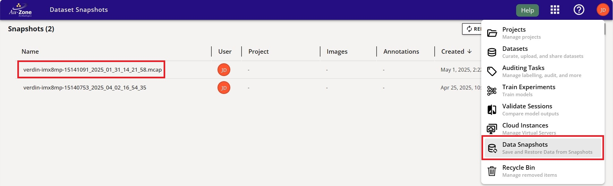
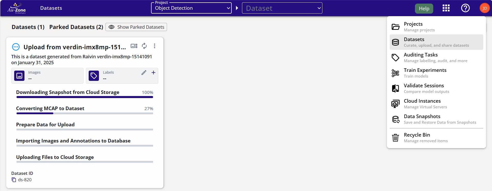
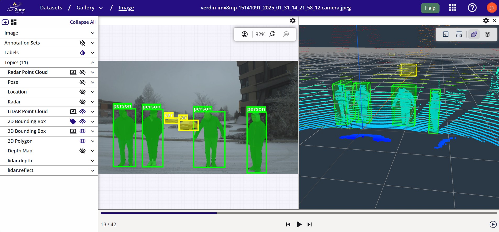

Studio Client
The EdgeFirst Studio Client, edgefirst-client, provides an API and command-line interface (CLI) into the EdgeFirst Studio. This client provides programmatic and command-line access to many of the features of the EdgeFirst Studio, specifically related to the upload of MCAP file into snapshots and snapshot conversion or restoration into datasets. The commands below will mirror the UI actions described in the snapshot walkthrough linked above.
This page describes the command-line interface, the Bridge In API documentation is yet to be added.
A summary of the core features is listed below:
- Project List & Search
- Dataset List & Search & Export
- Annotations Listing & Export to JSON and Arrow
- Snapshot Download & Upload & Restore to Dataset (including Auto-Annotations)
- Trainer List & Search
- Trainer Session List & Search & Artifacts Download
- Validator List & Search
Installation
The Python package includes the command-line application and is an easy way to install the binary.
pip install edgefirst-client
Included with EdgeFirst Middleware
The edgefirst-client is installed as part of the standard EdgeFirst Middleware installation, no additional setup is required.
Once installed you can confirm you can communicate with the EdgeFirst Studio Server with the version command.
$ edgefirst-client version
EdgeFirst Studio Server: 3.7.3-f0b4eee Client: 1.3.3
Authentication
Authentication to the EdgeFirst Studio Server is done using the standard login you would use from the web interface. To avoid having to type your username and password each time, an authentication token can be generated and saved using the login command.
$ edgefirst-client login
> EdgeFirst Studio Username ********
> EdgeFirst Studio Password ********
[2025-05-01T18:08:59Z INFO edgefirst_client] Saved configuration to /home/torizon/.config/edgefirststudio/config.toml
/home/torizon/.config/edgefirststudio/config.toml which remains valid for 7 days. At any time you can use the logout command to forget the token and remove it from the configuration file, or re-run the login command to regenerate it.
To query the token, use the following command:
edgefirst-client token
$ edgefirst-client token
eyJhbGciOiJIUzI1NiIsInR5cCI6IkpX...
Dataset Preparation
Once data has been recorded using the MCAP Recording Service of the Raivin, and we have access to the mcap files, it is very simple to upload the files into a project. The next step we have to do is to create a snapshot and then restore it as a dataset (optionally using AGTG for auto annotation of the images).
Create a Snapshot
To create a snapshot, locate the folder with the MCAP files and run the following command:
$ edgefirst-client create-snapshot <path>
[<SNAPSHOT_ID>] <status>: <Name of the folder or file specified>
path is the path to the folder containing the MCAP files or the path to the mcap file. Refer to the MCAP Recording page for more information. Notice that the snapshot can only be restored if status is available (keyword after the [ID], status can also be unavailable if any error occurs).
This command with a successful output would looks as follows:
$ edgefirst-client create-snapshot /media/DATA/verdin-imx8mp-15141091_2025_01_31_14_21_58.mcap
[1816] available: verdin-imx8mp-15141091_2025_01_31_14_21_58.mcap
The created snapshot will be listed under the "Data Snapshots" page in EdgeFirst Studio

Also, available snapshots can be listed by calling:
$ edgefirst-client snapshots
[<SNAPSHOT_ID>] available: <Snapshot Name (folder name from above)>
[<OTHER_ID>] unavailable: <Snapshot Name (a different name)>
$ edgefirst-client snapshots
[1651] available: verdin-imx8mp-15140753_2025_04_02_16_54_35
[1816] available: verdin-imx8mp-15141091_2025_01_31_14_21_58.mcap
Make a note of the snapshot ID that was created. In this case, the snapshot ID is 1816.
Restore Snapshots
Warning
Restoring snapshots to datasets will deduct funds from your EdgeFirst Studio account.
To restore any snapshot as a dataset, we need to get the project ID where the dataset is going to be stored. Available projects can be listed by calling:
$ edgefirst-client projects
[<PROJECT_ID>] <Project Name>: <Project Description>
$ edgefirst-client projects
[265] Sample Project: Sample project contains a collection of datasets to help users get started on the platform.
[628] Object Detection: This project trains and deploys Vision models for detecting objects.
Make a note of the project ID where the dataset will be stored. In this case the project ID is 628.
Now that we have the project ID 628 and the snapshot ID 1816, we can restore the snapshot using the restore-snapshot command.
$ edgefirst-client restore-snapshot <PROJECT_ID> <SNAPSHOT_ID> --dataset-name "Dataset Name" --dataset-description "Dataset Description"
edgefirst-client restore-snapshot 628 1816 --dataset-name "Upload from verdin-imx8mp-15141091" --dataset-description "This is a dataset generated from Raivin verdin-imx8mp-15141091 on January 31, 2025"
[task: 3499] Upload from verdin-imx8mp-15141091: verdin-imx8mp-15141091_2025_01_31_14_21_58.mcap
The dataset upload process will be shown in EdgeFirst Studio.

We can use the datasets command to confirm that the dataset was uploaded to the project with ID 628:
$ edgefirst-client datasets 628
[2080] Upload from verdin-imx8mp-15141091: This is a dataset generated from Raivin verdin-imx8mp-15141091 on January 31, 2025
The restore-snapshot command provides several options to customize the dataset creation process:
--autodepth: Enables automatic depth map generation for the dataset--autolabel: Specifies labels for automatic annotation of objects in the dataset (e.g.person,car)--topics: Filters which topics from the mcap files to include in the dataset (if not specified, all topics are included)--dataset-name: Sets the name for the new dataset--dataset-description: Provides a description for the dataset
Warning
Automated depth generation and labeling services will incur additional costs on top of the snapshot restoration.
For example, to create a dataset with automatic depth maps and annotations for person and car objects, run the following command:
$ edgefirst-client restore-snapshot <PROJECT_ID> <SNAPSHOT_ID> --dataset-name "Dataset Name" --dataset-description "Dataset Description" --autodepth --autolabel "person car"
$ edgefirst-client restore-snapshot 628 1816 --dataset-name "Upload from verdin-imx8mp-15141091 with AGTG" --dataset-description "This is a dataset generated from Raivin verdin-imx8mp-15141091 on January 31, 2025 with depth map generation and automated labelling for the class person and car." --autolabel "person car" --autodepth
The --autolabel parameter currently supports COCO labels. We can list any class found in the COCO labels list to auto annotate these classes. In EdgeFirst Studio, we can visualize the results of the auto-annotations when restoring the snapshot. In this example, "person" and "car" are being shown as specified from the command above.

Command Reference
The EdgeFirst Studio Client provides a comprehensive set of commands for interacting with EdgeFirst Studio. Here's a detailed explanation of the available commands:
Authentication Commands
version: Displays the current EdgeFirst Studio Server version$ edgefirst-client version edgefirst-client 1.3.3login: Authenticates with the server and stores the token in the configuration file$ edgefirst-client login Username: your_username Password: ****logout: Removes the stored authentication token$ edgefirst-client logouttoken: Displays the current authentication token$ edgefirst-client token eyJhbGciOiJIUzI1NiIsInR5cCI6IkpXVCJ9...
Project Management
projects: Lists all projects accessible to the authenticated user$ edgefirst-client projects [25] MultiTask: This project contains datasets for both object detection and segmentation [54] ObjectDetection: This project contains datasets that only support object detection taskproject: Retrieves detailed information for a specific project using its ID$ edgefirst-client project 54find-projects: Searches for projects by name$ edgefirst-client find-projects ObjectDetection [54] ObjectDetection: This project contains datasets that only support object detection task
Dataset Operations
datasets: Lists all datasets (optionally filtered by project ID). If project ID is not provided all the datasets will be listed$ edgefirst-client datasets 54 [32] Playingcards: A dataset for detecting playingcardsdataset: Retrieves detailed information for a specific dataset using its ID$ edgefirst-client dataset 32find-datasets: Searches for datasets by name (optionally filtered by project)$ edgefirst-client find-datasets Playingcards --project-id 54
Annotation Management
A single dataset is allowed to have multiple annotations sets. That is the reason why annotations are separated from dataset-download commands.
annotation-sets: Lists available annotation sets for a specific dataset$ edgefirst-client annotation-sets 32 [1] Default Annotation Set [2] Validation Setannotations: Retrieves annotations for a dataset and annotation set, filtered by types. Types could be any of the following options:box2d,box3d,segmentation. By default this command will return a JSON file. However, the user can always return an Arrow dataframe by adding the--arrowas shown below.
$ edgefirst-client annotations 32 --types box2d,segmentation
...
"object_id": "605152ea-e681-4f02-a60a-a70e525e9acd",
"label_name": "suitcase",
"group": "train",
"box2d": {
"h": 0.21910417,
"w": 0.23835938,
"x": 0.69021099,
"y": 0.874552085
}
...
edgefirst-client annotations 32 --arrow dataset.arrow --types box2d,segmentation
Snapshot Operations
snapshots: Lists available snapshots$ edgefirst-client snapshots [101] Snapshot 2023-01-01 [102] Snapshot 2023-02-01snapshot: Retrieves detailed information for a specific snapshot$ edgefirst-client snapshot 101find-snapshots: Searches for snapshots by description$ edgefirst-client find-snapshots "January 2023"create-snapshot: Creates a new snapshot from a local file or directory$ edgefirst-client create-snapshot ./my_datasetdownload-snapshot: Downloads a snapshot to the local filesystem$ edgefirst-client download-snapshot 101 --output ./snapshot_2023_01restore-snapshot: Restores a snapshot to a project$ edgefirst-client restore-snapshot 101 54 --name "Restored Dataset" --topics "list of topics" --autolabel "list of labels"
Training Management
trainer-sessions: Lists training sessions (optionally filtered by trainer)$ edgefirst-client trainer-sessions [456] ... Artifact { name: "modelpack.h5", model_type: "modelpack" },...] [324] ... Artifact { name: "modelpack.h5", model_type: "modelpack" },...]trainer-session: Retrieves detailed information for a specific training sessionedgefirst-client trainer-session 324 [324] ... Artifact { name: "modelpack.h5", model_type: "modelpack" },...]download-artifact: Downloads artifacts from a training session. Notice this command requires theoutputparameter is pointing to a file and not to a folderedgefirst-client download-artifact 324 labels.txt --output /home/reinier/labels.txt
Each command supports various options and flags that can be viewed using the --help flag with any command. For example:
$ edgefirst-client projects --help
List all projects available to the authenticated user
Usage: edgefirst-client projects
Options:
-h, --help Print help
Usage
Usage information is provided by the help command.
$ edgefirst-client help
Usage: edgefirst-client [OPTIONS] <COMMAND>
Commands:
version Returns the Deep View Enterprise Server version
login Login to the Deep View Enterprise Server with the provided username and password. The token is stored in the application configuration file
logout Logout by removing the token from the application configuration file
token Returns the DVE authentication token for the provided username and password. This would typically be stored into the DVE_TOKEN environment variable for subsequent commands to avoid re-entering username/password
projects List all projects available to the authenticated user
project Retrieve project information for the provided project ID
find-projects Find a project by name
datasets List all datasets available to the authenticated user. If a project ID is provided, only datasets for that project are listed
dataset Retrieve dataset information for the provided dataset ID. The cloud key can be printed with the --cloud-key option, this requires additional AWS S3 permissions to access the bucket
find-dataset Find a dataset by name. If a project ID is provided, only datasets for that project are searched. A project name can also be provided which will be used to find the project ID
download-dataset Download a dataset to the local filesystem. The dataset ID is required along with an optional output file path, if none is provided the dataset is downloaded to the current working directory
annotation-sets List available annotation sets for the provided dataset ID
annotations Fetch annotations for the provided dataset and annotation set ID. The retrieved annotations are filtered by annotation type. The annotations are printed in JSON format
snapshots List available snapshots
snapshot Retrieve snapshot information for the provided snapshot ID
find-snapshots Find snapshots containing the provided description
create-snapshot Create a new snapshot from the provided path which can be a file or directory. The snapshot name will be the base name of the path
download-snapshot Downloads a snapshot to the local filesystem. The snapshot ID is required along with an optional output file path, if none is provided the snapshot is downloaded to the current working directory
restore-snapshot Restore a snapshot to the provided project ID. The snapshot ID is required along with optional flags to restore the depth generator and AGTG pipeline. The dataset name and description can also be provided to override the snapshot name, otherwise the snapshot name is used and the description is set to the snapshot timestamp
trainers List training experiments for the provided project ID (optional). The trainers are groups of "experiments" in mlflow parlance, training jobs can be queried through the trainer-session commands
trainer Retrieve trainer information for the provided trainer ID
trainer-sessions List training sessions for the provided trainer ID (optional). The sessions are individual training jobs that can be queried for more detailed information
trainer-session Retrieve training session information for the provided session ID. The trainer session ID can be either be an integer or a string with the format t-xxx where xxx is the session ID in hex as shown in the DVE UI
download-artifact Download an artifact from the provided session ID. The session ID can be either be an integer or a string with the format t-xxx where xxx is the session ID in hex as shown in the DVE UI. The artifact name is the name of the file to download. The output file path is optional, if none is provided the artifact is downloaded to the current working directory
help Print this message or the help of the given subcommand(s)
Options:
--server <SERVER> DVE Server Name
--username <USERNAME> DVE Username
--password <PASSWORD> DVE Password
--token <TOKEN> DVE Token
-h, --help Print help
-V, --version Print version